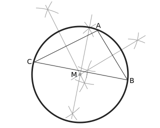
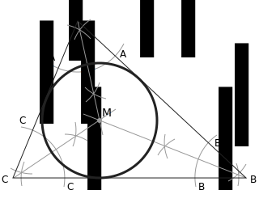

Zeichnerische Konstruktion eines Kreises um ein Dreieck

Im Gegensatz zum Kreis im Dreieck, in dem die Winkelhabierenden das Problem lösen, spielen im Kreis um das Dreieck die Seitenhalbierenden die Hauptrolle. Ihr Kreuzungspunkt M ist gleichzeitig Mittelpunkt des Kreises um das Dreieck.
Zeichnerische Konstruktion eines Kreises in einem Dreieck

Der Kreis im Dreieck wird mittels der Winkelhalbierenden konstruiert. Der Punkt M, welcher der Kreuzungspunkt der drei Senkrechten ist, ist Mittelpunkt des Kreises im Dreieck.